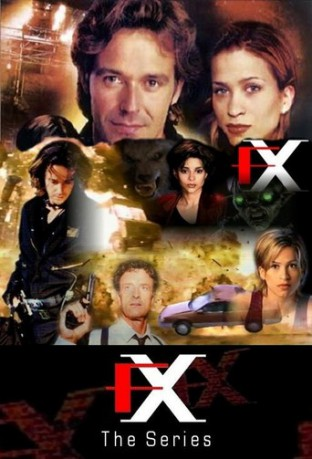

IMDB-Wertung: 6.9 / 10
IMDB-Wertung: 6.9 / 10  Metascore:
Metascore: 
Rollie Tyler, a special effects expert, helps his detective friend solve crimes by making criminals see what they want to see. But what is real and what is illusion?
Alternativ: F/X: The Series
 IMDB-Wertung: 6.9 / 10 Metascore:
Rollie Tyler, a special effects expert, helps his detective friend solve crimes by making criminals see what they want to see. But what is real and what is illusion?
Jahr: 1996
Dauer: 85 Minuten
FSK: 16
Land: USA Studio: AXNTonspuren:
Untertitel:
Auflösung: SD (576x432) Größe: 700 MB
Regisseur: Michael Vejar, Paul Lynch, Mario Azzopardi, Allan Eastman, Steve DiMarco, J. Miles Dale, James Head, Doug Lefler, Neill Fearnley, Jim Charleston, Eric Till, Jon Cassar, William Gereghty, Stephen L. Posey, Brenton Spencer, Brad Turner
Drehbuch: Baton
Soundtrack:
Darsteller:
 Carrie-Anne Moss als Lucinda Scott
Carrie-Anne Moss als Lucinda Scott Maria Conchita Alonso als Elena Serrano
Maria Conchita Alonso als Elena Serrano Malcolm Stewart als Marty Pruitt
Malcolm Stewart als Marty Pruitt Matthew Bennett als Coates
Matthew Bennett als Coates A.C. Peterson als Bartender
A.C. Peterson als Bartender Joe Pingue als Guard #1
Joe Pingue als Guard #1 Tig Fong als Mondo
Tig Fong als Mondo Jane Luk als Reporter
Jane Luk als Reporter Wallace Langham als Levi Chase
Wallace Langham als Levi Chase Rick Gonzalez als
Rick Gonzalez als  Ritchie Coster als Jimmy Hickman
Ritchie Coster als Jimmy Hickman Peter Mensah als Vincent
Peter Mensah als VincentDatei: X:\3-Trilogie(A-F)\FX - Tödliche Tricks\FX - The Illusion (1996, FSK16, 576x432).avi seit 18.07.2017
Festplatte: HD Collection-2(A-Z)-3(A-M)
 Alle Filme aus Gruppe '3-Trilogie(A-F)\FX - Tödliche Tricks'
Alle Filme aus Gruppe '3-Trilogie(A-F)\FX - Tödliche Tricks'